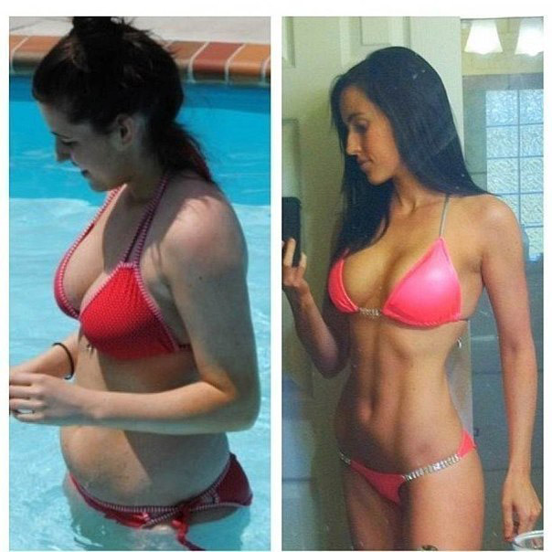

Comment j'ai perdu 34 kg
Publié le , 19:51 | Auteur: Monique

Salut, c'est à nouveau Monique. Je veux partager avec vous ma petite victoire sur les complexes et le surpoids. Mon histoire de la maladie, le divorce avec son mari bien-aimé, et le succès de surmonter ces difficultés.
Je veux commencer par le fait qu'après l’avortement j'étais si stressée, et dans le contexte de stress, j'ai eu un échec et la dépression a évolué. Jusqu'à ce que j'étais en dépression, j'avais mangé 2 fois supérieur à la norme. Comme je suis sujette à la plénitude, j’ai commencé a prendre de poids immédiatement. Le bilan est triste - 92 kg. D'abord, mon mari est essayé de me soutenir, tentait de sortir de la dépression, mais ensuite, il suffit de moi.
Un jour, mon mari m'a dit qu'il n'a pas besoin d'une telle femme défectueuse qui ne peut pas porter l'enfant, oui, et aussi semblable à une grosse vache. Vous ne pouez pas imaginer comment cela a été pour moi: la personne aimée m'a humilié, et puis il a demandé le divorce.
Je voulais déjà même de rendre la pareille à la vie parce que la vie sans la personne aimée et des enfants, je ne l'imaginais. Ma copine m’a emmené chez le médecin à peine , et celui-là m'a conseillé de perdre du poids, afin de normaliser les hormones et porter un bébé en bonne santé...
Le temps est venu de prendre vous-même!

Les mots de mon ex-mari de sa propre infériorité m'ont donné du repos, et debout une fois devant le miroir, j’avais peur de mon corps obèse, j'ai décidé qu'il est nécessaire de me changer et de devenir idéal.
Voici, j'ai commencé la transformation de mon propre corps: j’ai essayé toutes sortes d'exercices de yoga pour maigrir, pilules, 25 images, la crème anti-cellulite durs, des massages etc. TOUT CELA NE FONCTIONNE PAS DU TOUT. N'aide pas. Inutile.
J'ai même voulu l’accepter. Après tout, mon poids était le même - à environ 92 kg... J'ai envie de pleurer de mon impuissance.
En général, je n'ai presque abandonné cette idée
Perdre du poids wn un mois, c’est possible?!
Un jour, surfant sur les blogs sur internet, je suis tombée sur un blog où la jeune fille a perdu miraculeusement chez elle 22 kg en un mois, avec un truc () Je me suis intéressée bien sûr tout de suite et j’ai examiné tout de manière approfondie.
D`abord, je n`ai pas cru à cet effet parce que j`ai déjà essayé toutes sortes de pilules, en effet, déjà tellement vanté par la télévision qui n`aide pas... Mais cette jeune fille est assez chère en ligne, quand même elle a montré des photos "avant/après", et j`ai décidé de faire confiance à son conseil.
En général, j'ai commandé ce complexe (), il est venu en quelques jours en contre remboursement par la poste. Tout déballé, j'ai lu les instructions et commencé à l’utiliser activement.
Quel est le résultat?
je l'ai pris le matin et le soir. Honnêtement, j'ai un peu d'enthousiasme l'outil, et je ne croyais pas à son efficacité. Mais peu à peu j'ai commencé à remarquer que les volumes précédents ont commencé à disparaître.
J'ai décidé d'attendre une semaine, et puis....j'ai un peu la mâchoire sur le sol! LE POIDS A DIMINUÉ DE 6 KILOS!!! 7 jours! Pouvez-vous le croire??? Je ne suis pas en croire mes yeux, et encore une fois - 7 kilo 200 grammes sont disparus, tout est vrai! Je suis pas trompée et je ne suis pas folle! Je ne peux pas décrire ma joie. La dernière fois je suis tellement heureuse probablement il ya 20 ans :)
J'ai continué à prendre ce remède régulièrement pendant 2 mois, et quand j’ai repris la balance, la prochaine fois, j’ai été tout simplement stupéfaite - -34 KG EN 2 MOIS!!!J'ai même vérifié plusieurs fois - l'aiguille sur la balance montrait 58 KG!
Au travail, bien sûr, tout le monde a commencé à remarquer que je n'ai brusquement vide le poids, et on a commencé à m'interroger - qu’est-ce qui se passe. Mon collègue très beau et célibataire a commencé à prendre soin de moi, il disait qu'il était toujours jaloux de mon mari
En général, ma vie a changé après cette rapide minceur . Les hommes maintenant me disent toujours des compliments de tous les côtés. En fait, c’est très agréable por moi.
Vous savez, je me marie bientôt. Oui-oui, mon beau collègue. Et pas seulement cela, le porte déjà un nouveau bébé :) Grâce à poids perdu, mon corps a surmonté d'un échec, et maintenant je me prépare à devenir un femme et une mère heureuse et une famille unie, où tous les uns des autres apprécient et aiment!
c'est grâce à mon ex-mari, qui m’a insulté et jeté, j'ai surmonté la maladie, la dépression et l'excès de kilos, et maintenant, je suis femme la plus heureuse, mince et belle!!!
Je suis très heureuse que tout est arrivé. Simultanément avec le fait de maigrir, j'ai réalisé le problème de beaucoup d'entre nous que la plus simple des choses nous semblent inefficaces. Et plus complexes, par exemple, les opérations - efficaces. Mais ce n'est pas le cas. Perdre beaucoup de poids en aucun moment, vous pouvez naturellement, de manière sûre et rapide, sans régime et l'exercice. Récupérée! Par ailleurs, les fillettes, le poids n'a pas augmenté, le volume est resté le même :)

Je l’ai commandé surce site. C`est la seule compagnie certifiée en France, qui vend . En ce qui concerne la livraison, le colis vient avec le remboursement par courrier. De sorte que c’est en toute sécurisé, et personne ne saura votre petit secret.

Le prix de est égal à 2 billets de cinéma, ou 1 marche à l'épicerie. Décidez vous - même- beaucoup ou non. Mon opinion est un moyen efficace devrait être vendu à un prix deux fois plus cher!
eh Bien, j'espère que cette information vous a été utile et Vous, enfin, nous retrouverons la taille et le poids souhaités en peu de temps! Amusez-Vous!





les Blogueurs en ligne


Et encore 327 sans avatar...